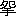

| 高野聖 | |
| 泉 鏡花 | |
| (2012) | |
高野聖
泉鏡花
「参謀
本部編纂
の地図をまた繰開
いて見るでもなかろう、と思ったけれども、余りの道じゃから、手を触
るさえ暑くるしい、旅の法衣
の袖
をかかげて、表紙を附
けた折本になってるのを引張
り出した。
飛驒
から信州へ越
える深山
の間道で、ちょうど立休らおうという一本の樹立
も無い、右も左も山ばかりじゃ、手を伸
ばすと達
きそうな峰
があると、その峰へ峰が乗り、巓
が被
さって、飛ぶ鳥も見えず、雲の形も見えぬ。
道と空との間にただ一人我ばかり、およそ正午
と覚しい極熱
の太陽の色も白いほどに冴
え返った光線を、深々と戴
いた一重
の檜笠
に凌
いで、こう図面を見た。」
旅僧
はそういって、握拳
を両方枕
に乗せ、それで額を支えながら俯向
いた。
道連
になった上人
は、名古屋からこの越前敦賀
の旅籠屋
に来て、今しがた枕に就いた時まで、私
が知ってる限り余り仰向
けになったことのない、つまり傲然
として物を見ない質
の人物である。
一体東海道掛川
の宿
から同じ汽車に乗り組んだと覚えている、腰掛
の隅
に頭
を垂れて、死灰
のごとく控
えたから別段目にも留まらなかった。
尾張
の停車場
で他
の乗組員は言合
せたように、残らず下りたので、函
の中にはただ上人と私と二人になった。
この汽車は新橋を昨夜九時半に発
って、今夕
敦賀に入ろうという、名古屋では正午
だったから、飯に一折の鮨
を買った。旅僧も私と同じくその鮨を求めたのであるが、蓋
を開けると、ばらばらと海苔
が懸
った、五目飯
の下等なので。
（やあ、人参
と干瓢
ばかりだ。）と粗忽
ッかしく絶叫
した。私の顔を見て旅僧は耐
え兼ねたものと見える、くっくっと笑い出した、もとより二人ばかりなり、知己
にはそれからなったのだが、聞けばこれから越前へ行って、派は違
うが永平寺
に訪ねるものがある、但
し敦賀に一泊
とのこと。
若狭
へ帰省する私もおなじ処
で泊
らねばならないのであるから、そこで同行の約束
が出来た。
かれは高野山
に籍
を置くものだといった、年配四十五六、柔和
ななんらの奇
も見えぬ、懐
しい、おとなしやかな風采
で、羅紗
の角袖
の外套
を着て、白のふらんねるの襟巻
をしめ、土耳古形
の帽
を冠
り、毛糸の手袋
を嵌
め、白足袋
に日和下駄
で、一見、僧侶
よりは世の中の宗匠
というものに、それよりもむしろ俗か。
（お泊りはどちらじゃな、）といって聞かれたから、私は一人旅の旅宿のつまらなさを、しみじみ歎息
した、第一盆
を持って女中が坐睡
をする、番頭が空世辞
をいう、廊下
を歩行
くとじろじろ目をつける、何より最も耐
え難
いのは晩飯の支度
が済むと、たちまち灯
を行燈
に換
えて、薄暗
い処でお休みなさいと命令されるが、私は夜が更
けるまで寐
ることが出来ないから、その間の心持といったらない、殊
にこの頃
は夜は長し、東京を出る時から一晩の泊
が気になってならないくらい、差支
えがなくば御僧
とご一所
に。
快く頷
いて、北陸地方を行脚
の節はいつでも杖
を休める香取屋
というのがある、旧
は一軒
の旅店
であったが、一人女
の評判なのがなくなってからは看板を外
した、けれども昔
から懇意
な者は断らず泊めて、老人
夫婦が内端
に世話をしてくれる、宜
しくばそれへ、その代
といいかけて、折を下に置いて、
（ご馳走
は人参と干瓢ばかりじゃ。）
とからからと笑った、慎
み深そうな打見
よりは気の軽い。
岐阜
ではまだ蒼空
が見えたけれども、後は名にし負う北国空、米原
、長浜
は薄曇
、幽
に日が射
して、寒さが身に染みると思ったが、柳
ヶ瀬
では雨、汽車の窓が暗くなるに従うて、白いものがちらちら交
って来た。
（雪ですよ。）
（さようじゃな。）といったばかりで別に気に留めず、仰
いで空を見ようともしない、この時に限らず、賤
ヶ岳
が、といって、古戦場を指した時も、琵琶湖
の風景を語った時も、旅僧はただ頷いたばかりである。
敦賀で悚毛
の立つほど煩
わしいのは宿引
の悪弊
で、その日も期したるごとく、汽車を下
ると停車場
の出口から町端
へかけて招きの提灯
、印傘
の堤
を築き、潜抜
ける隙
もあらなく旅人を取囲んで、手
ン手
に喧
しく己
が家号
を呼立
てる、中にも烈
しいのは、素早
く手荷物を引手繰
って、へい難有
う様
で、を喰
わす、頭痛持は血が上るほど耐
え切れないのが、例の下を向いて悠々
と小取廻
しに通抜
ける旅僧は、誰
も袖を曳
かなかったから、幸いその後に跟
いて町へ入って、ほっという息を吐
いた。
雪は小止
なく、今は雨も交らず乾いた軽いのがさらさらと面
を打ち、宵
ながら門
を鎖
した敦賀の通
はひっそりして一条二条縦横
に、辻
の角は広々と、白く積った中を、道の程
八町ばかりで、とある軒下
に辿
り着いたのが名指
の香取屋。
床
にも座敷
にも飾
りといっては無いが、柱立
の見事な、畳
の堅
い、炉
の大いなる、自在鍵
の鯉
は鱗
が黄金造
であるかと思わるる艶
を持った、素
ばらしい竈
を二ツ並
べて一斗飯
は焚
けそうな目覚
しい釜
の懸
った古家
で。
亭主は法然天窓
、木綿の筒袖
の中へ両手の先を竦
まして、火鉢
の前でも手を出さぬ、ぬうとした親仁
、女房
の方は愛嬌
のある、ちょっと世辞のいい婆
さん、件
の人参と干瓢の話を旅僧が打出すと、にこにこ笑いながら、縮緬雑魚
と、鰈
の干物
と、とろろ昆布
の味噌汁
とで膳
を出した、物の言振
取成
なんど、いかにも、上人
とは別懇
の間と見えて、連
の私の居心
のいいといったらない。
やがて二階に寝床
を拵
えてくれた、天井
は低いが、梁
は丸太で二抱
もあろう、屋の棟
から斜
に渡
って座敷の果
の廂
の処では天窓
に支
えそうになっている、巌乗
な屋造
、これなら裏の山から雪崩
が来てもびくともせぬ。
特に炬燵
が出来ていたから私はそのまま嬉
しく入った。寝床はもう一組おなじ炬燵に敷
いてあったが、旅僧はこれには来
らず、横に枕を並べて、火の気のない臥床
に寝た。
寝る時、上人は帯を解かぬ、もちろん衣服も脱
がぬ、着たまま円
くなって俯向形
に腰からすっぽりと入って、肩
に夜具
の袖
を掛
けると手を突
いて畏
った、その様子
は我々と反対で、顔に枕をするのである。
ほどなく寂然
として寐
に就きそうだから、汽車の中でもくれぐれいったのはここのこと、私は夜が更けるまで寐ることが出来ない、あわれと思ってもうしばらくつきあって、そして諸国を行脚なすった内のおもしろい談
をといって打解
けて幼
らしくねだった。
すると上人は頷いて、私
は中年から仰向けに枕に就かぬのが癖
で、寝るにもこのままではあるけれども目はまだなかなか冴えている、急に寐就かれないのはお前様とおんなじであろう。出家
のいうことでも、教
だの、戒
だの、説法とばかりは限らぬ、若いの、聞かっしゃい、と言って語り出した。後で聞くと宗門名誉
の説教師で、六明寺
の宗朝
という大和尚
であったそうな。
「今にもう一人ここへ来て寝るそうじゃが、お前様と同国じゃの、若狭の者で塗物
の旅商人
。いやこの男なぞは若いが感心に実体
な好
い男。
私
が今話の序開
をしたその飛驒の山越
をやった時の、麓
の茶屋で一緒
になった富山
の売薬という奴
あ、けたいの悪い、ねじねじした厭
な壮佼
で。
まずこれから峠
に掛
ろうという日の、朝早く、もっとも先
の泊
はものの三時ぐらいには発
って来たので、涼しい内に六里ばかり、その茶屋までのしたのじゃが朝晴でじりじり暑いわ。
慾張
抜いて大急ぎで歩いたから咽
が渇
いてしようがあるまい、早速
茶を飲もうと思うたが、まだ湯が沸
いておらぬという。
どうしてその時分じゃからというて、めったに人通
のない山道、朝顔の咲
いてる内に煙が立つ道理もなし。
床几
の前には冷たそうな小流
があったから手桶
の水を汲
もうとしてちょいと気がついた。
それというのが、時節柄
暑さのため、恐
しい悪い病が流行
って、先に通った辻などという村は、から一面に石灰
だらけじゃあるまいか。
（もし、姉
さん。）といって茶店の女に、
（この水はこりゃ井戸
のでござりますか。）と、きまりも悪し、もじもじ聞くとの。
（いんね、川のでございます。）という、はて面妖
なと思った。
（山したの方には大分流行病
がございますが、この水は何
から、辻の方から流れて来るのではありませんか。）
（そうでねえ。）と女は何気
なく答えた、まず嬉
しやと思うと、お聞きなさいよ。
ここに居て、さっきから休んでござったのが、右の売薬じゃ。このまた万金丹
の下廻
と来た日には、ご存じの通り、千筋
の単衣
に小倉
の帯、当節は時計を挟
んでいます、脚絆
、股引
、これはもちろん、草鞋
がけ、千草木綿
の風呂敷包
の角
ばったのを首に結
えて、桐油合羽
を小さく畳
んでこいつを真田紐
で右の包につけるか、小弁慶
の木綿の蝙蝠傘
を一本、おきまりだね。ちょいと見ると、いやどれもこれも克明
で分別のありそうな顔をして。
これが泊
に着くと、大形の浴衣
に変って、帯広解
で焼酎
をちびりちびり遣
りながら、旅籠屋
の女のふとった膝
へ脛
を上げようという輩
じゃ。
（これや、法界坊
。）
なんて、天窓
から嘗
めていら。
（異
なことをいうようだが何かね、世の中の女が出来ねえと相場がきまって、すっぺら坊主になってやっぱり生命
は欲しいのかね、不思議じゃあねえか、争われねえもんだ、姉さん見ねえ、あれでまだ未練のある内がいいじゃあねえか、）といって顔を見合せて二人でからからと笑った。
年紀
は若し、お前様
、私
は真赤
になった、手に汲んだ川の水を飲みかねて猶予
っているとね。
ポンと煙管
を払
いて、
（何、遠慮
をしねえで浴びるほどやんなせえ、生命
が危くなりゃ、薬を遣
らあ、そのために私
がついてるんだぜ、なあ姉さん。おい、それだっても無銭
じゃあいけねえよ、憚
りながら神方
万金丹、一貼
三百だ、欲しくば買いな、まだ坊主に報捨
をするような罪は造らねえ、それともどうだお前いうことを肯
くか。）といって茶店の女の背中を叩
いた。
私
はそうそうに遁出
した。
いや、膝だの、女の背中だのといって、いけ年
を仕
った和尚が業体
で恐入
るが、話が、話じゃからそこはよろしく。」
「私
も腹立紛
れじゃ、無暗
と急いで、それからどんどん山の裾
を田圃道
へかかる。
半町ばかり行くと、路
がこう急に高くなって、上
りが一カ処、横からよく見えた、弓形
でまるで土で勅使橋
がかかってるような。上を見ながら、これへ足を踏懸
けた時、以前の薬売
がすたすたやって来て追着
いたが。
別に言葉も交
さず、またものをいったからというて、返事をする気はこっちにもない。どこまでも人を凌
いだ仕打
な薬売は流眄
にかけて故
とらしゅう私
を通越
して、すたすた前へ出て、ぬっと小山のような路の突先
へ蝙蝠傘を差して立ったが、そのまま向うへ下りて見えなくなる。
その後から爪先上
り、やがてまた太鼓
の胴
のような路の上へ体が乗った、それなりにまた下
りじゃ。
売薬は先へ下りたが立停
ってしきりに四辺
を眗
している様子、執念
深く何か巧
んだかと、快からず続いたが、さてよく見ると仔細
があるわい。
路はここで二条
になって、一条
はこれからすぐに坂になって上
りも急なり、草も両方から生茂
ったのが、路傍
のその角
の処にある、それこそ四抱
、そうさな、五抱
もあろうという一本の檜
の、背後
へ蜿
って切出したような大巌
が二ツ三ツ四ツと並んで、上の方へ層
なってその背後へ通じているが、私
が見当をつけて、心組
んだのはこっちではないので、やっぱり今まで歩いて来たその幅
の広いなだらかな方が正
しく本道、あと二里足らず行けば山になって、それからが峠になるはず。
と見ると、どうしたことかさ、今いうその檜じゃが、そこらに何
もない路を横断
って見果
のつかぬ田圃の中空
へ虹
のように突出ている、見事な。根方
の処
の土が壊
れて大鰻
を捏
ねたような根が幾筋ともなく露
れた、その根から一筋の水がさっと落ちて、地の上へ流れるのが、取って進もうとする道の真中に流出
してあたりは一面。
田圃が湖にならぬが不思議で、どうどうと瀬
になって、前途
に一叢
の藪
が見える、それを境にしておよそ二町ばかりの間まるで川じゃ。礫
はばらばら、飛石のようにひょいひょいと大跨
で伝えそうにずっと見ごたえのあるのが、それでも人の手で並べたに違
いはない。
もっとも衣服
を脱いで渡るほどの大事なのではないが、本街道にはちと難儀
過ぎて、なかなか馬などが歩行
かれる訳
のものではないので。
売薬もこれで迷ったのであろうと思う内、切放
れよく向
を変えて右の坂をすたすたと上りはじめた。見る間
に檜を後
に潜
り抜けると、私
が体の上あたりへ出て下を向き、
（おいおい、松本
へ出る路はこっちだよ、）といって無造作
にまた五六歩。
岩の頭へ半身を乗出して、
（茫然
してると、木精
が攫
うぜ、昼間だって容赦
はねえよ。）と嘲
るがごとく言い棄
てたが、やがて岩の陰
に入って高い処の草に隠
れた。
しばらくすると見上げるほどな辺
へ蝙蝠傘の先が出たが、木の枝
とすれすれになって茂
の中に見えなくなった。
（どッこいしょ、）と暢気
なかけ声で、その流の石の上を飛々
に伝って来たのは、茣蓙
の尻当
をした、何にもつけない天秤棒
を片手で担いだ百姓
じゃ。」
「さっきの茶店
からここへ来るまで、売薬の外は誰
にも逢
わなんだことは申上げるまでもない。
今別れ際
に声を懸けられたので、先方
は道中の商売人と見ただけに、まさかと思っても気迷
がするので、今朝
も立ちぎわによく見て来た、前にも申す、その図面をな、ここでも開けて見ようとしていたところ。
（ちょいと伺
いとう存じますが、）
（これは何でござりまする、）と山国の人などは殊
に出家と見ると丁寧
にいってくれる。
（いえ、お伺い申しますまでもございませんが、道はやっぱりこれを素直
に参るのでございましょうな。）
（松本へ行かっしゃる？ ああああ本道じゃ、何ね、この間の梅雨
に水が出て、とてつもない川さ出来たでがすよ。）
（まだずっとどこまでもこの水でございましょうか。）
（何のお前様、見たばかりじゃ、訳はござりませぬ、水になったのは向うのあの藪までで、後はやっぱりこれと同一
道筋で山までは荷車が並んで通るでがす。藪のあるのは旧
大きいお邸
の医者様の跡でな、ここいらはこれでも一ツの村でがした、十三年前の大水の時、から一面に野良
になりましたよ、人死
もいけえこと。ご坊様
歩行
きながらお念仏でも唱えてやってくれさっしゃい。）と問わぬことまで深切
に話します。それでよく仔細
が解
って確
になりはなったけれども、現に一人踏迷
った者がある。
（こちらの道はこりゃどこへ行くので、）といって売薬の入った左手
の坂を尋
ねて見た。
（はい、これは五十年ばかり前までは人が歩行
いた旧道でがす。やっぱり信州へ出まする、先は一つで七里ばかり総体近うござりますが、いや今時
往来の出来るのじゃあござりませぬ。去年もご坊様、親子連
の巡礼
が間違えて入ったというで、はれ大変な、乞食
を見たような者じゃというて、人命に代りはねえ、追
かけて助けべえと、巡査様
が三人、村の者が十二人、一組になってこれから押登って、やっと連れて戻
ったくらいでがす。ご坊様も血気に逸
って近道をしてはなりましねえぞ、草臥
れて野宿をしてからがここを行かっしゃるよりはましでござるに。はい、気を付けて行かっしゃれ。）
ここで百姓に別れてその川の石の上を行こうとしたがふと猶予
ったのは売薬の身の上で。
まさかに聞いたほどでもあるまいが、それが本当ならば見殺
じゃ、どの道私は出家
の体、日が暮
れるまでに宿へ着いて屋根の下に寝るには及
ばぬ、追着
いて引戻してやろう。罷違
うて旧道を皆歩行
いても怪
しゅうはあるまい、こういう時候じゃ、狼
の旬
でもなく、魑魅魍魎
の汐
さきでもない、ままよ、と思うて、見送ると早
や深切な百姓の姿も見えぬ。
（よし。）
思切
って坂道を取って懸
った、俠気
があったのではござらぬ、血気に逸
ったではもとよりない、今申したようではずっともう悟
ったようじゃが、いやなかなかの臆病者
、川の水を飲むのさえ気が怯
けたほど生命
が大事で、なぜまたと謂
わっしゃるか。
ただ挨拶
をしたばかりの男なら、私は実のところ、打棄
っておいたに違いはないが、快からぬ人と思ったから、そのままで見棄てるのが、故
とするようで、気が責めてならなんだから、」
と宗朝はやはり俯向
けに床
に入ったまま合掌
していった。
「それでは口でいう念仏にも済まぬと思うてさ。」
「さて、聞かっしゃい、私
はそれから檜
の裏を抜けた、岩の下から岩の上へ出た、樹
の中を潜
って草深い径
をどこまでも、どこまでも。
するといつの間にか今上った山は過ぎてまた一ツ山が近
いて来た、この辺
しばらくの間は野が広々として、さっき通った本街道よりもっと幅の広い、なだらかな一筋道。
心持
西と、東と、真中
に山を一ツ置いて二条
並んだ路のような、いかさまこれならば槍
を立てても行列が通ったであろう。
この広
ッ場
でも目の及ぶ限り芥子粒
ほどの大
さの売薬の姿も見ないで、時々焼けるような空を小さな虫が飛び歩行
いた。
歩行
くにはこの方が心細い、あたりがぱッとしていると便
がないよ。もちろん飛驒越
と銘
を打った日には、七里に一軒十里に五軒という相場、そこで粟
の飯にありつけば都合も上
の方ということになっております。それを覚悟
のことで、足は相応に達者、いや屈
せずに進んだ進んだ。すると、だんだんまた山が両方から逼
って来て、肩に支
えそうな狭いとこになった、すぐに上
。
さあ、これからが名代
の天生
峠と心得たから、こっちもその気になって、何しろ暑いので、喘
ぎながらまず草鞋
の紐
を緊直
した。
ちょうどこの上口
の辺に美濃
の蓮大寺
の本堂の床下
まで吹抜
けの風穴
があるということを年経
ってから聞きましたが、なかなかそこどころの沙汰
ではない、一生懸命
、景色
も奇跡
もあるものかい、お天気さえ晴れたか曇ったか訳が解らず、目
じろぎもしないですたすたと捏
ねて上
る。
とお前様お聞かせ申す話は、これからじゃが、最初に申す通り路がいかにも悪い、まるで人が通いそうでない上に、恐しいのは、蛇
で。両方の叢
に尾と頭とを突込んで、のたりと橋を渡しているではあるまいか。
私
は真先
に出会
した時は笠
を被
って竹杖
を突いたまま、はッと息を引いて膝
を折って坐
ったて。
いやもう生得
大嫌
、嫌
というより恐怖
いのでな。
その時はまず人助けにずるずると尾を引いて、向うで鎌首
を上げたと思うと草をさらさらと渡った。
ようよう起上
って道の五六町も行くと、またおなじように、胴中
を乾かして尾も首も見えぬのが、ぬたり！
あッというて飛退
いたが、それも隠れた。三度目に出会ったのが、いや急には動かず、しかも胴体の太さ、たとい這出
したところでぬらぬらとやられてはおよそ五分間ぐらい尾を出すまでに間
があろうと思う長虫と見えたので、やむことをえず私
は跨
ぎ越した、とたんに下腹
が突張
ってぞッと身の毛、毛穴が残らず鱗
に変って、顔の色もその蛇のようになったろうと目を塞
いだくらい。
絞
るような冷汗
になる気味の悪さ、足が竦
んだというて立っていられる数
ではないからびくびくしながら路を急ぐとまたしても居たよ。
しかも今度のは半分に引切
ってある胴から尾ばかりの虫じゃ、切口が蒼
を帯びてそれでこう黄色な汁
が流れてぴくぴくと動いたわ。
我を忘れてばらばらとあとへ遁帰
ったが、気が付けば例のがまだ居るであろう、たとい殺されるまでも二度とはあれを跨
ぐ気はせぬ。ああさっきのお百姓がものの間違
でも故道
には蛇がこうといってくれたら、地獄
へ落ちても来なかったにと照りつけられて、涙
が流れた、南無阿弥陀仏
、今でもぞっとする。」と額に手を。
「果
が無いから肝
を据
えた、もとより引返す分ではない。旧
の処
にはやっぱり丈足
らずの骸
がある、遠くへ避
けて草の中へ駈
け抜けたが、今にもあとの半分が絡
いつきそうで耐
らぬから気臆
がして足が筋張
ると石に躓
いて転んだ、その時膝節
を痛めましたものと見える。
それからがくがくして歩行
くのが少し難渋
になったけれども、ここで倒
れては温気
で蒸殺
されるばかりじゃと、我身で我身を激
まして首筋を取って引立てるようにして峠の方へ。
何しろ路傍
の草いきれが恐
しい、大鳥の卵見たようなものなんぞ足許
にごろごろしている茂り塩梅
。
また二里ばかり大蛇
の蜿
るような坂を、山懐
に突当
って岩角を曲って、木の根を繞
って参ったがここのことで余りの道じゃったから、参謀
本部の絵図面を開いて見ました。
何やっぱり道はおんなじで聞いたにも見たのにも変
はない、旧道はこちらに相違はないから心遣
りにも何にもならず、もとより歴
とした図面というて、描
いてある道はただ栗
の毬
の上へ赤い筋が引張ってあるばかり。
難儀
さも、蛇も、毛虫も、鳥の卵も、草いきれも、記してあるはずはないのじゃから、さっぱりと畳
んで懐
に入れて、うむとこの乳の下へ念仏を唱え込んで立直ったはよいが、息も引かぬ内
に情無
い長虫が路を切った。
そこでもう所詮
叶
わぬと思ったなり、これはこの山の霊
であろうと考えて、杖を棄
てて膝を曲げ、じりじりする地
に両手をついて、
（誠に済みませぬがお通しなすって下さりまし、なるたけお午睡
の邪魔
になりませぬようにそっと通行いたしまする。
ご覧
の通り杖も棄てました。）と我
折
れしみじみと頼んで額を上げるとざっという凄
じい音で。
心持
よほどの大蛇と思った、三尺、四尺、五尺四方、一丈余、だんだんと草の動くのが広がって、傍
の渓
へ一文字にさっと靡
いた、果
は峰
も山も一斉に揺
いだ、恐毛
を震
って立竦
むと涼しさが身に染みて、気が付くと山颪
よ。
この折から聞えはじめたのはどっという山彦
に伝わる響
、ちょうど山の奥に風が渦巻
いてそこから吹起
る穴があいたように感じられる。
何しろ山霊感応あったか、蛇は見えなくなり暑さも凌
ぎよくなったので、気も勇
み足も捗取
ったが、ほどなく急に風が冷たくなった理由を会得
することが出来た。
というのは目の前に大森林があらわれたので。
世の譬
にも天生
峠は蒼空
に雨が降るという、人の話にも神代
から杣
が手を入れぬ森があると聞いたのに、今までは余り樹がなさ過ぎた。
今度は蛇のかわりに蟹
が歩きそうで草鞋
が冷えた。しばらくすると暗くなった、杉、松、榎
と処々
見分けが出来るばかりに遠い処から幽
に日の光の射
すあたりでは、土の色が皆黒い。中には光線が森を射通
す工合
であろう、青だの、赤だの、ひだが入
って美しい処があった。
時々爪尖
に絡
まるのは葉の雫
の落溜
った糸のような流
で、これは枝を打って高い処を走るので。ともするとまた常磐木
が落葉する、何の樹とも知れずばらばらと鳴り、かさかさと音がしてぱっと檜笠
にかかることもある、あるいは行過ぎた背後
へこぼれるのもある、それ等
は枝から枝に溜
っていて何十年ぶりではじめて地の上まで落ちるのか分らぬ。」
「心細さは申すまでもなかったが、卑怯
なようでも修行
の積まぬ身には、こういう暗い処の方がかえって観念に便
がよい。何しろ体が凌
ぎよくなったために足の弱
も忘れたので、道も大きに捗取
って、まずこれで七分は森の中を越したろうと思う処で五六尺天窓
の上らしかった樹の枝から、ぼたりと笠の上へ落ち留まったものがある。
鉛
の錘
かとおもう心持、何か木の実ででもあるかしらんと、二三度振ってみたが附着
いていてそのままには取れないから、何心なく手をやって摑
むと、滑
らかに冷
りと来た。
見ると海鼠
を裂
いたような目も口もない者じゃが、動物には違いない。不気味で投出そうとするとずるずると辷
って指の尖
へ吸ついてぶらりと下った、その放れた指の尖から真赤な美しい血が垂々
と出たから、吃驚
して目の下へ指をつけてじっと見ると、今折曲げた肱
の処へつるりと垂懸
っているのは同形
をした、幅が五分、丈
が三寸ばかりの山海鼠
。
呆気
に取られて見る見る内に、下の方から縮みながら、ぶくぶくと太って行くのは生血
をしたたかに吸込むせいで、濁
った黒い滑らかな肌
に茶褐色
の縞
をもった、疣胡瓜
のような血を取る動物、こいつは蛭
じゃよ。
誰
が目にも見違えるわけのものではないが、図抜
て余り大きいからちょっとは気がつかぬであった、何の畠
でも、どんな履歴
のある沼
でも、このくらいな蛭はあろうとは思われぬ。
肱をばさりと振
ったけれども、よく喰込
んだと見えてなかなか放れそうにしないから不気味
ながら手で抓
んで引切ると、ぷつりといってようよう取れる、しばらくも耐
ったものではない、突然
取って大地へ叩
きつけると、これほどの奴等
が何万となく巣をくって我
ものにしていようという処、かねてその用意はしていると思われるばかり、日のあたらぬ森の中の土は柔
い、潰
れそうにもないのじゃ。
ともはや頸
のあたりがむずむずして来た、平手
で扱
て見ると横撫
に蛭の背
をぬるぬるとすべるという、やあ、乳の下へ潜
んで帯の間にも一疋
、蒼
くなってそッと見ると肩の上にも一筋。
思わず飛上って総身
を震いながらこの大枝の下を一散にかけぬけて、走りながらまず心覚えの奴だけは夢中
でもぎ取った。
何にしても恐しい今の枝には蛭が生
っているのであろうとあまりの事に思って振返ると、見返った樹の何の枝か知らずやっぱり幾
ツということもない蛭の皮じゃ。
これはと思う、右も、左も、前の枝も、何の事はないまるで充満
。
私は思わず恐怖
の声を立てて叫
んだ、すると何と？ この時は目に見えて、上からぼたりぼたりと真黒な瘦
せた筋の入った雨が体へ降かかって来たではないか。
草鞋を穿
いた足の甲
へも落ちた上へまた累
り、並んだ傍
へまた附着
いて爪先
も分らなくなった、そうして活
きてると思うだけ脈を打って血を吸うような、思いなしか一ツ一ツ伸縮
をするようなのを見るから気が遠くなって、その時不思議な考えが起きた。
この恐しい山蛭
は神代
の古
からここに屯
をしていて、人の来るのを待ちつけて、永い久しい間にどのくらい何斛
かの血を吸うと、そこでこの虫の望
が叶
う、その時はありったけの蛭が残らず吸っただけの人間の血を吐出
すと、それがために土がとけて山一ツ一面に血と泥
との大沼にかわるであろう、それと同時にここに日の光を遮
って昼もなお暗い大木が切々
に一ツ一ツ蛭になってしまうのに相違
ないと、いや、全くの事で。」
「およそ人間が滅びるのは、地球の薄皮
が破れて空から火が降るのでもなければ、大海が押被
さるのでもない、飛驒国
の樹林
が蛭になるのが最初で、しまいには皆
血と泥の中に筋の黒い虫が泳ぐ、それが代
がわりの世界であろうと、ぼんやり。
なるほどこの森も入口では何の事もなかったのに、中へ来るとこの通り、もっと奥深く進んだら早
や残らず立樹
の根の方から朽
ちて山蛭になっていよう、助かるまい、ここで取殺される因縁
らしい、取留
めのない考えが浮んだのも人が知死期
に近
いたからだとふと気が付いた。
どの道死ぬるものなら一足でも前へ進んで、世間の者が夢
にも知らぬ血と泥の大沼の片端
でも見ておこうと、そう覚悟
がきまっては気味の悪いも何もあったものじゃない、体中珠数生
になったのを手当
次第に搔
い除
け挘
り棄
て、抜き取りなどして、手を挙げ足を踏んで、まるで躍
り狂う形で歩行
き出した。
はじめの中
は一廻
も太ったように思われて痒
さが耐
らなかったが、しまいにはげっそり瘦
せたと感じられてずきずき痛んでならぬ、その上を容赦
なく歩行
く内にも入交
りに襲
いおった。
既
に目も眩
んで倒れそうになると、禍
はこの辺が絶頂であったと見えて、隧道
を抜けたように、遥
に一輪
のかすれた月を拝んだのは、蛭の林の出口なので。
いや蒼空
の下へ出た時には、何のことも忘れて、砕
けろ、微塵
になれと横なぐりに体を山路
へ打倒
した。それでからもう砂利
でも針でもあれと地
へこすりつけて、十余りも蛭の死骸
を引
くりかえした上から、五六間
向うへ飛んで身顫
をして突立
った。
人を馬鹿
にしているではありませんか。あたりの山では処々
茅蜩殿
、血と泥の大沼になろうという森を控
えて鳴いている、日は斜
、渓底
はもう暗い。
まずこれならば狼
の餌食
になってもそれは一思
に死なれるからと、路はちょうどだらだら下
なり、小僧さん、調子はずれに竹の杖を肩にかついで、すたこら遁
げたわ。
これで蛭に悩まされて痛いのか、痒
いのか、それとも擽
ったいのか得
もいわれぬ苦しみさえなかったら、嬉
しさに独
り飛驒山越
の間道
で、お経
に節
をつけて外道踊
をやったであろう、ちょっと清心丹
でも嚙砕
いて疵口
へつけたらどうだと、だいぶ世の中の事に気がついて来たわ。抓
っても確
に活返
ったのじゃが、それにしても富山の薬売はどうしたろう、あの様子
ではとうに血になって泥沼に。皮ばかりの死骸は森の中の暗い処、おまけに意地の汚
い下司
な動物が骨までしゃぶろうと何百という数でのしかかっていた日には、酢
をぶちまけても分る気遣
はあるまい。
こう思っている間、件
のだらだら坂は大分長かった。
それを下
り切ると流が聞えて、とんだ処に長さ一間ばかりの土橋がかかっている。
はやその谷川の音を聞くと我身で持余
す蛭の吸殻
を真逆
に投込んで、水に浸
したらさぞいい心地
であろうと思うくらい、何の渡りかけて壊
れたらそれなりけり。
危いとも思わずにずっと懸
る、少しぐらぐらしたが難なく越した。向うからまた坂じゃ、今度は上
りさ、ご苦労千万。」
「とてもこの疲
れようでは、坂を上るわけには行くまいと思ったが、ふと前途
に、ヒイインと馬の嘶
くのが谺
して聞えた。
馬士
が戻
るのか小荷駄
が通るか、今朝一人の百姓に別れてから時の経ったは僅
じゃが、三年も五年も同一
ものをいう人間とは中を隔
てた。馬が居るようではともかくも人里に縁があると、これがために気が勇んで、ええやっと今一揉
。
一軒の山家
の前へ来たのには、さまで難儀
は感じなかった。夏のことで戸障子のしまりもせず、殊
に一軒家、あけ開いたなり門というてもない、突然
破縁
になって男が一人、私
はもう何の見境もなく、
（頼
みます、頼みます、）というさえ助
を呼ぶような調子で、取縋
らぬばかりにした。
（ご免
なさいまし、）といったがものもいわない、首筋をぐったりと、耳を肩で塞
ぐほど顔を横にしたまま小児
らしい、意味のない、しかもぼっちりした目で、じろじろと門に立ったものを瞻
める、その瞳
を動かすさえ、おっくうらしい、気の抜けた身の持方。裾短
かで袖
は肱
より少い、糊気
のある、ちゃんちゃんを着て、胸のあたりで紐
で結
えたが、一ツ身のものを着たように出ッ腹の太り肉
、太鼓
を張ったくらいに、すべすべとふくれてしかも出臍
という奴
、南瓜
の蔕
ほどな異形
な者を片手でいじくりながら幽霊
の手つきで、片手を宙にぶらり。
足は忘れたか投出した、腰がなくば暖簾
を立てたように畳
まれそうな、年紀
がそれでいて二十二三、口をあんぐりやった上唇
で巻込めよう、鼻の低さ、出額
。五分刈
の伸
びたのが前は鶏冠
のごとくになって、頸脚
へ撥
ねて耳に被
った、啞
か、白痴
か、これから蛙
になろうとするような少年。私
は驚いた、こっちの生命
に別条はないが、先方様
の形相
。いや、大別条
。
（ちょいとお願い申します。）
それでもしかたがないからまた言葉をかけたが少しも通ぜず、ばたりというと僅
に首の位置をかえて今度は左の肩を枕
にした、口の開いてること旧
のごとし。
こういうのは、悪くすると突然
ふんづかまえて臍を捻
りながら返事のかわりに嘗
めようも知れぬ。
私
は一足退
ったが、いかに深山だといってもこれを一人で置くという法はあるまい、と足を爪立
てて少し声高
に、
（どなたぞ、ご免なさい、）といった。
背戸
と思うあたりで再び馬の嘶
く声。
（どなた、）と納戸
の方でいったのは女じゃから、南無三宝
、この白い首には鱗
が生えて、体は床
を這
って尾をずるずると引いて出ようと、また退
った。
（おお、お坊様
。）と立顕
れたのは小造
の美しい、声も清
しい、ものやさしい。
私
は大息を吐
いて、何にもいわず、
（はい。）と頭
を下げましたよ。
婦人
は膝
をついて坐
ったが、前へ伸上
るようにして、黄昏
にしょんぼり立った私
が姿を透
かして見て、
（何か用でござんすかい。）
休めともいわずはじめから宿の常世
は留守
らしい、人を泊
めないときめたもののように見える。
いい後
れてはかえって出そびれて頼むにも頼まれぬ仕誼
にもなることと、つかつかと前へ出た。
丁寧
に腰を屈
めて、
（私は、山越で信州へ参ります者ですが旅籠
のございます処まではまだどのくらいでございましょう。）
（あなたまだ八里余
でございますよ。）
（その他
に別に泊めてくれます家
もないのでしょうか。）
（それはございません。）といいながら目
たたきもしないで清
しい目で私
の顔をつくづく見ていた。
（いえもう何でございます、実はこの先一町行け、そうすれば上段の室
に寝かして一晩扇
いでいてそれで功徳
のためにする家があると承
りましても、全くのところ一足も歩行
けますのではございません、どこの物置
でも馬小屋の隅
でもよいのでございますから後生
でございます。）とさっき馬が嘶
いたのは此家
より外にはないと思ったから言った。
婦人
はしばらく考えていたが、ふと傍
を向いて布の袋
を取って、膝
のあたりに置いた桶
の中へざらざらと一幅
、水を溢
すようにあけて縁
をおさえて、手で掬
って俯向
いて見たが、
（ああ、お泊め申しましょう、ちょうど炊
いてあげますほどお米もございますから、それに夏のことで、山家は冷えましても夜のものにご不自由もござんすまい。さあ、ともかくもあなた、お上り遊ばして。）
というと言葉の切れぬ先にどっかと腰を落した。婦人
はつと身を起して立って来て、
（お坊様、それでござんすがちょっとお断り申しておかねばなりません。）
はっきりいわれたので私
はびくびくもので、
（はい、はい。）
（いいえ、別のことじゃござんせぬが、私
は癖
として都の話を聞くのが病
でございます、口に蓋
をしておいでなさいましても無理やりに聞こうといたしますが、あなた忘れてもその時聞かして下さいますな、ようござんすかい、私は無理にお尋
ね申します、あなたはどうしてもお話しなさいませぬ、それを是非にと申しましても断
っておっしゃらないようにきっと念を入れておきますよ。）
と仔細
ありげなことをいった。
山の高さも谷の深さも底の知れない一軒家の婦人
の言葉とは思うたが保つにむずかしい戒
でもなし、私
はただ頷
くばかり。
（はい、よろしゅうございます、何事もおっしゃりつけは背
きますまい。）
婦人
は言下
に打解
けて、
（さあさあ汚
うございますが早くこちらへ、お寛
ぎなさいまし、そうしてお洗足
を上げましょうかえ。）
（いえ、それには及びませぬ、雑巾
をお貸し下さいまし。ああ、それからもしそのお雑巾次手
にずッぷりお絞
んなすって下さると助
ります、途中
で大変な目に逢
いましたので体を打棄
りたいほど気味が悪うございますので、一ツ背中を拭
こうと存じますが、恐入
りますな。）
（そう、汗
におなりなさいました、さぞまあ、お暑うござんしたでしょう、お待ちなさいまし、旅籠
へお着き遊ばして湯にお入りなさいますのが、旅するお方には何よりご馳走
だと申しますね、湯どころか、お茶さえ碌
におもてなしもいたされませんが、あの、この裏の崖
を下りますと、綺麗
な流
がございますからいっそそれへいらっしゃッてお流しがよろしゅうございましょう。）
聞いただけでも飛んでも行きたい。
（ええ、それは何より結構でございますな。）
（さあ、それではご案内申しましょう、どれ、ちょうど私も米を磨
ぎに参ります。）と件
の桶
を小脇
に抱
えて、縁側
から、藁草履
を穿
いて出たが、屈
んで板縁
の下を覗
いて、引出したのは一足の古下駄
で、かちりと合
して埃
を払
いて揃
えてくれた。
（お穿
きなさいまし、草鞋
はここにお置きなすって、）
私
は手をあげて、一礼して、
（恐入ります、これはどうも、）
（お泊め申すとなりましたら、あの、他生
の縁
とやらでござんす、あなたご遠慮を遊ばしますなよ。）まず恐しく調子がいいじゃて。」
「（さあ、私に跟
いてこちらへ、）と件の米磨桶
を引抱
えて手拭
を細い帯に挟
んで立った。
髪は房
りとするのを束
ねてな、櫛
をはさんで簪
で留
めている、その姿の佳
さというてはなかった。
私
も手早く草鞋を解
いたから、早速古下駄を頂戴
して、縁から立つ時ちょいと見ると、それ例の白痴殿
じゃ。
同じく私
が方
をじろりと見たっけよ、舌不足
が饒舌
るような、愚
にもつかぬ声を出して、
（姉
や、こえ、こえ。）といいながら気
だるそうに手を持上げてその蓬々
と生えた天窓
を撫
でた。
（坊さま、坊さま？）
すると婦人
が、下
ぶくれな顔にえくぼを刻んで、三ツばかりはきはきと続けて頷いた。
少年はうむといったが、ぐたりとしてまた臍
をくりくりくり。
私
は余り気の毒さに顔も上げられないでそっと盗むようにして見ると、婦人
は何事も別に気に懸
けてはおらぬ様子、そのまま後へ跟
いて出ようとする時、紫陽花
の花の蔭
からぬいと出た一名の親仁
がある。
背戸
から廻って来たらしい、草鞋を穿
いたなりで、胴乱
の根付
を紐長
にぶらりと提
げ、銜煙管
をしながら並んで立停
った。
（和尚
様おいでなさい。）
婦人
はそなたを振向いて、
（おじ様どうでござんした。）
（さればさの、頓馬
で間の抜けたというのはあのことかい。根ッから早や狐
でなければ乗せ得そうにもない奴
じゃが、そこはおらが口じゃ、うまく仲人
して、二月
や三月
はお嬢様
がご不自由のねえように、翌日
はものにしてうんとここへ担
ぎ込みます。）
（お頼み申しますよ。）
（承知、承知、おお、嬢様どこさ行かっしゃる。）
（崖の水までちょいと。）
（若い坊様連れて川へ落っこちさっしゃるな、おらここに眼張
って待っとるに、）と横様
に縁にのさり。
（貴僧
、あんなことを申しますよ。）と顔を見て微笑
んだ。
（一人で参りましょう、）と傍
へ退
くと、親仁
はくっくっと笑って、
（はははは、さあ、早くいってござらっせえ。）
（おじ様、今日はお前、珍
しいお客がお二方ござんした、こういう時はあとからまた見えようも知れません、次郎さんばかりでは来た者が弱んなさろう、私
が帰るまでそこに休んでいておくれでないか。）
（いいともの。）といいかけて、親仁
は少年の傍
へにじり寄って、鉄挺
を見たような拳
で、背中をどんとくらわした、白痴
の腹はだぶりとして、べそをかくような口つきで、にやりと笑う。
私
はぞっとして面
を背けたが、婦人
は何気
ない体
であった。
親仁
は大口を開いて、
（留守におらがこの亭主を盗むぞよ。）
（はい、ならば手柄
でござんす、さあ、貴僧
参りましょうか。）
背後
から親仁が見るように思ったが、導かるるままに壁
について、かの紫陽花のある方ではない。
やがて背戸と思う処で左に馬小屋を見た、ことことという音は羽目
を蹴
るのであろう、もうその辺から薄暗くなって来る。
（貴僧
、ここから下りるのでございます、辷
りはいたしませぬが、道が酷
うございますからお静
に、）という。」
「そこから下りるのだと思われる、松の木の細くッて度外れに背の高い、ひょろひょろしたおよそ五六間上までは小枝一ツもないのがある。その中を潜
ったが、仰
ぐと梢
に出て白い、月の形はここでも別にかわりは無かった、浮世
はどこにあるか十三夜で。
先へ立った婦人
の姿が目さきを放れたから、松の幹
に摑
まって覗
くと、つい下に居た。
仰向
いて、
（急に低くなりますから気をつけて。こりゃ貴僧
には足駄
では無理でございましたかしら、宜
しくば草履
とお取交
え申しましょう。）
立後
れたのを歩行悩
んだと察した様子、何がさて転げ落ちても早く行って蛭
の垢
を落したさ。
（何、いけませんければ跣足
になります分のこと、どうぞお構いなく、嬢様にご心配をかけては済みません。）
（あれ、嬢様ですって、）とやや調子を高めて、艶麗
に笑った。
（はい、ただいまあの爺様
が、さよう申しましたように存じますが、夫人
でございますか。）
（何にしても貴僧
には叔母
さんくらいな年紀
ですよ。まあ、お早くいらっしゃい、草履もようござんすけれど、刺
がささりますといけません、それにじくじく湿
れていてお気味が悪うございましょうから。）と向う向
でいいながら衣服
の片褄
をぐいとあげた。真白なのが暗
まぎれ、歩行
くと霜
が消えて行くような。
ずんずんずんずんと道を下りる、傍
らの叢
から、のさのさと出たのは蟇
で。
（あれ、気味が悪いよ。）というと婦人
は背後
へ高々と踵
を上げて向うへ飛んだ。
（お客様がいらっしゃるではないかね、人の足になんか搦
まって、贅沢
じゃあないか、お前達は虫を吸っていればたくさんだよ。
貴僧
ずんずんいらっしゃいましな、どうもしはしません。こう云う処ですからあんなものまで人懐
しゅうございます、厭
じゃないかね、お前達と友達をみたようで愧
しい、あれいけませんよ。）
蟇はのさのさとまた草を分けて入った、婦人
はむこうへずいと。
（さあこの上へ乗るんです、土が柔かで壊
えますから地面は歩行
かれません。）
いかにも大木の僵
れたのが草がくれにその幹をあらわしている、乗ると足駄穿
で差支
えがない、丸木だけれどもおそろしく太いので、もっともこれを渡り果てるとたちまち流
の音が耳に激
した、それまでにはよほどの間
。
仰いで見ると松の樹
はもう影も見えない、十三夜の月はずっと低うなったが、今下りた山の頂
に半ばかかって、手が届きそうにあざやかだけれども、高さはおよそ計り知られぬ。
（貴僧
、こちらへ。）
といった婦人
はもう一息、目の下に立って待っていた。
そこは早や一面の岩で、岩の上へ谷川の水がかかってここによどみを作っている、川幅は一間
ばかり、水に臨
めば音はさまでにもないが、美しさは玉を解いて流したよう、かえって遠くの方で凄
じく岩に砕
ける響
がする。
向う岸はまた一座の山の裾
で、頂の方は真暗
だが、山の端
からその山腹を射る月の光に照し出された辺
からは大石小石、栄螺
のようなの、六尺角に切出したの、剣
のようなのやら、鞠
の形をしたのやら、目の届く限り残らず岩で、次第に大きく水に蘸
ったのはただ小山のよう。」
「（いい塩梅
に今日は水がふえておりますから、中へ入りませんでもこの上でようございます。）と甲を浸
して爪先
を屈
めながら、雪のような素足で石の盤
の上に立っていた。
自分達が立った側
は、かえってこっちの山の裾が水に迫って、ちょうど切穴の形になって、そこへこの石を嵌
めたような誂
。川上も下流も見えぬが、向うのあの岩山、九十九折
のような形、流は五尺、三尺、一間ばかりずつ上流の方がだんだん遠く、飛々
に岩をかがったように隠見
して、いずれも月光を浴びた、銀の鎧
の姿、目
のあたり近いのはゆるぎ糸を捌
くがごとく真白に翻
って。
（結構な流れでございますな。）
（はい、この水は源が滝
でございます、この山を旅するお方は皆
な大風のような音をどこかで聞きます。貴僧
はこちらへいらっしゃる道でお心着きはなさいませんかい。）
さればこそ山蛭
の大藪
へ入ろうという少し前からその音を。
（あれは林へ風の当るのではございませんので？）
（いえ、誰
でもそう申します、あの森から三里ばかり傍道
へ入りました処に大滝があるのでございます、それはそれは日本一だそうですが、路
が嶮
しゅうござんすので、十人に一人参ったものはございません。その滝が荒
れましたと申しまして、ちょうど今から十三年前、恐
しい洪水
がございました、こんな高い処まで川の底になりましてね、麓
の村も山も家も残らず流れてしまいました。この上
の洞
も、はじめは二十軒ばかりあったのでござんす、この流れもその時から出来ました、ご覧なさいましな、この通り皆な石が流れたのでございますよ。）
婦人
はいつかもう米を精
げ果てて、衣紋
の乱れた、乳の端
もほの見ゆる、膨
らかな胸を反
して立った、鼻高く口を結んで目を恍惚
と上を向いて頂を仰いだが、月はなお半腹のその累々
たる巌
を照すばかり。
（今でもこうやって見ますと恐
いようでございます。）と屈んで二
の腕
の処を洗っていると。
（あれ、貴僧
、そんな行儀
のいいことをしていらしってはお召
が濡
れます、気味が悪うございますよ、すっぱり裸体
になってお洗いなさいまし、私が流して上げましょう。）
（いえ、）
（いえじゃあござんせぬ、それ、それ、お法衣
の袖
が浸
るではありませんか、）というと突然
背後
から帯に手をかけて、身悶
をして縮むのを、邪慳
らしくすっぱり脱
いで取った。
私
は師匠
が厳
しかったし、経を読む身体
じゃ、肌
さえ脱いだことはついぞ覚えぬ。しかも婦人
の前、蝸牛
が城を明け渡したようで、口を利
くさえ、まして手足のあがきも出来ず、背中を円くして、膝
を合せて、縮かまると、婦人
は脱がした法衣
を傍
らの枝へふわりとかけた。
（お召はこうやっておきましょう、さあお背
を、あれさ、じっとして。お嬢様とおっしゃって下さいましたお礼に、叔母さんが世話を焼くのでござんす、お人の悪い。）といって片袖を前歯で引上げ、玉のような二の腕をあからさまに背中に乗せたが、じっと見て、
（まあ、）
（どうかいたしておりますか。）
（痣
のようになって、一面に。）
（ええ、それでございます、酷
い目に逢
いました。）
思い出してもぞッとするて。」
「婦人
は驚いた顔をして、
（それでは森の中で、大変でございますこと。旅をする人が、飛驒
の山では蛭が降るというのはあすこでござんす。貴僧
は抜道をご存じないから正面
に蛭の巣をお通りなさいましたのでございますよ。お生命
も冥加
なくらい、馬でも牛でも吸い殺すのでございますもの。しかし疼
くようにお痒
いのでござんしょうね。）
（ただいまではもう痛みますばかりになりました。）
（それではこんなものでこすりましては柔
かいお肌が擦剝
けましょう。）というと手が綿のように障
った。
それから両方の肩から、背、横腹、臀
、さらさら水をかけてはさすってくれる。
それがさ、骨に通って冷たいかというとそうではなかった。暑い時分じゃが、理窟
をいうとこうではあるまい、私
の血が沸
いたせいか、婦人
の温気
か、手で洗ってくれる水がいい工合
に身に染みる、もっとも質
の佳
い水は柔かじゃそうな。
その心地
の得
もいわれなさで、眠気
がさしたでもあるまいが、うとうとする様子で、疵
の痛みがなくなって気が遠くなって、ひたと附
ついている婦人
の身体で、私
は花びらの中へ包まれたような工合。
山家
の者には肖合
わぬ、都にも希
な器量はいうに及
ばぬが弱々しそうな風采
じゃ、背中を流す中
にもはッはッと内証
で呼吸
がはずむから、もう断ろう断ろうと思いながら、例の恍惚
で、気はつきながら洗わした。
その上、山の気か、女の香
か、ほんのりと佳い薫
がする、私
は背後
でつく息じゃろうと思った。」
上人
はちょっと句切って、
「いや、お前様お手近じゃ、その明
を搔
き立ってもらいたい、暗いと怪
しからぬ話じゃ、ここらから一番野面
で遣
つけよう。」
枕
を並べた上人の姿も朧
げに明
は暗くなっていた、早速燈心
を明くすると、上人は微笑
みながら続けたのである。
「さあ、そうやっていつの間にやら現
とも無しに、こう、その不思議な、結構な薫のする暖
い花の中へ柔かに包まれて、足、腰、手、肩、頸
から次第
に天窓
まで一面に被
ったから吃驚
、石に尻餅
を搗
いて、足を水の中に投げ出したから落ちたと思うとたんに、女の手が背後
から肩越しに胸をおさえたのでしっかりつかまった。
（貴僧
、お傍
に居て汗臭
うはござんせぬかい、とんだ暑がりなんでございますから、こうやっておりましてもこんなでございますよ。）という胸にある手を取ったのを、慌
てて放して棒のように立った。
（失礼、）
（いいえ誰も見ておりはしませんよ。）と澄
して言う、婦人
もいつの間にか衣服
を脱いで全身を練絹
のように露
していたのじゃ。
何と驚
くまいことか。
（こんなに太っておりますから、もうお愧
しいほど暑いのでございます、今時は毎日二度も三度も来てはこうやって汗を流します、この水がございませんかったらどういたしましょう、貴僧
、お手拭
。）といって絞
ったのを寄越
した。
（それでおみ足をお拭
きなさいまし。）
いつの間にか、体はちゃんと拭いてあった、お話し申すも恐
多いが、はははははは。」
「なるほど見たところ、衣服
を着た時の姿とは違
うて肉
つきの豊な、ふっくりとした膚
。
（さっき小屋へ入って世話をしましたので、ぬらぬらした馬の鼻息が体中にかかって気味が悪うござんす。ちょうどようございますから私も体を拭きましょう。）
と姉弟
が内端話
をするような調子。手をあげて黒髪をおさえながら腋
の下を手拭でぐいと拭き、あとを両手で絞りながら立った姿、ただこれ雪のようなのをかかる霊水で清めた、こういう女の汗は薄紅
になって流れよう。
ちょいちょいと櫛
を入れて、
（まあ、女がこんなお転婆
をいたしまして、川へ落
こちたらどうしましょう、川下
へ流れて出ましたら、村里の者が何といって見ましょうね。）
（白桃
の花だと思います。）とふと心付いて何の気もなしにいうと、顔が合うた。
すると、さも嬉
しそうに莞爾
してその時だけは初々
しゅう年紀
も七ツ八ツ若やぐばかり、処女
の羞
を含
んで下を向いた。
私
はそのまま目を外
らしたが、その一段の婦人
の姿が月を浴びて、薄い煙に包まれながら向う岸の潵
に濡
れて黒い、滑
かな大きな石へ蒼味
を帯びて透通
って映るように見えた。
するとね、夜目で判然
とは目に入
らなんだが地体
何でも洞穴
があるとみえる。ひらひらと、こちらからもひらひらと、ものの鳥ほどはあろうという大蝙蝠
が目を遮
った。
（あれ、いけないよ、お客様があるじゃないかね。）
不意を打たれたように叫んで身悶
えをしたのは婦人
。
（どうかなさいましたか、）もうちゃんと法衣
を着たから気丈夫
に尋
ねる。
（いいえ、）
といったばかりできまりが悪そうに、くるりと後向
になった。
その時小犬ほどな鼠色
の小坊主
が、ちょこちょことやって来て、あなやと思うと、崖
から横に宙をひょいと、背後
から婦人
の背中へぴったり。
裸体
の立姿は腰から消えたようになって、抱
ついたものがある。
（畜生
、お客様が見えないかい。）
と声に怒
を帯びたが、
（お前達は生意気
だよ、）と激しくいいさま、腋の下から覗
こうとした件
の動物の天窓
を振返
りさまにくらわしたで。
キッキッというて奇声を放った、件の小坊主はそのまま後飛
びにまた宙を飛んで、今まで法衣
をかけておいた、枝の尖
へ長い手で釣
し下
ったと思うと、くるりと釣瓶覆
に上へ乗って、それなりさらさらと木登
をしたのは、何と猿
じゃあるまいか。
枝から枝を伝うと見えて、見上げるように高い木の、やがて梢
まで、かさかさがさり。
まばらに葉の中を透
して月は山の端
を放れた、その梢のあたり。
婦人
はものに拗
ねたよう、今の悪戯
、いや、毎々、蟇
と蝙蝠
と、お猿で三度じゃ。
その悪戯に多
く機嫌
を損
ねた形、あまり子供がはしゃぎ過ぎると、若い母様
には得
てある図じゃ。
本当に怒り出す。
といった風情
で面倒臭
そうに衣服
を着ていたから、私
は何にも問わずに小さくなって黙って控
えた。」
「優しいなかに強みのある、気軽に見えてもどこにか落着のある、馴々
しくて犯し易
からぬ品のいい、いかなることにもいざとなれば驚くに足らぬという身に応
のあるといったような風の婦人
、かく嬌瞋
を発してはきっといいことはあるまい、今この婦人
に邪慳
にされては木から落ちた猿同然じゃと、おっかなびっくりで、おずおず控えていたが、いや案ずるより産
が安い。
（貴僧
、さぞおかしかったでござんしょうね、）と自分でも思い出したように快く微笑
みながら、
（しようがないのでございますよ。）
以前と変らず心安くなった、帯も早やしめたので、
（それでは家
へ帰りましょう。）と米磨桶
を小腋
にして、草履
を引
かけてつと崖
へ上
った。
（お危
うござんすから。）
（いえ、もうだいぶ勝手が分っております。）
ずッと心得
た意
じゃったが、さて上
る時見ると思いの外
上までは大層高い。
やがてまた例の木の丸太を渡るのじゃが、さっきもいった通り草のなかに横倒れになっている木地がこうちょうど鱗
のようで、譬
にもよくいうが松の木は蝮
に似ているで。
殊
に崖を、上の方へ、いい塩梅
に蜿
った様子が、とんだものに持って来いなり、およそこのくらいな胴中
の長虫がと思うと、頭と尾を草に隠して、月あかりに歴然
とそれ。
山路の時を思い出すと我ながら足が竦
む。
婦人
は深切に後
を気遣
うては気を付けてくれる。
（それをお渡りなさいます時、下を見てはなりません。ちょうどちゅうとでよッぽど谷が深いのでございますから、目が廻
うと悪うござんす。）
（はい。）
愚図愚図
してはいられぬから、我身
を笑いつけて、まず乗った。引
かかるよう、刻
が入れてあるのじゃから、気さえ確
なら足駄
でも歩行
かれる。
それがさ、一件じゃから耐
らぬて、乗るとこうぐらぐらして柔かにずるずると這
いそうじゃから、わっというと引跨
いで腰をどさり。
（ああ、意気地
はございませんねえ。足駄では無理でございましょう、これとお穿
き換
えなさいまし、あれさ、ちゃんということを肯
くんですよ。）
私
はそのさっきから何
んとなくこの婦人
に畏敬
の念が生じて善か悪か、どの道命令されるように心得たから、いわるるままに草履を穿いた。
するとお聞きなさい、婦人
は足駄を穿きながら手を取ってくれます。
たちまち身が軽くなったように覚えて、訳
なく後
に従って、ひょいとあの孤家
の背戸
の端
へ出た。
出会頭
に声を懸
けたものがある。
（やあ、大分手間が取れると思ったに、ご坊様
旧
の体で帰らっしゃったの。）
（何をいうんだね、小父様
家
の番はどうおしだ。）
（もういい時分じゃ、また私
も余
り遅
うなっては道が困るで、そろそろ青を引出して支度
しておこうと思うてよ。）
（それはお待遠
でござんした。）
（何さ、行ってみさっしゃいご亭主
は無事じゃ、いやなかなか私
が手には口説
落されなんだ、ははははは。）と意味もないことを大笑
して、親仁
は厩
の方へてくてくと行った。
白痴
はおなじ処になお形を存している、海月
も日にあたらねば解けぬとみえる。」
「ヒイイン！ しっ、どうどうどうと背戸を廻
る鰭爪
の音が縁
へ響
いて親仁
は一頭の馬を門前へ引き出した。
轡頭
を取って立ちはだかり、
（嬢様そんならこのままで私
参りやする、はい、ご坊様
にたくさんご馳走
して上げなされ。）
婦人
は炉縁
に行燈
を引附
け、俯向
いて鍋
の下を燻
していたが、振仰
ぎ、鉄の火箸
を持った手を膝
に置いて、
（ご苦労でござんす。）
（いんえご懇
には及びましねえ。しっ！）と荒縄
の綱
を引く。青で蘆毛
、裸馬
で逞
しいが、鬣
の薄い牡
じゃわい。
その馬がさ、私も別に馬は珍しゅうもないが、白痴殿
の背後
に畏
って手持不沙汰
じゃから今引いて行こうとする時縁側へひらりと出て、
（その馬はどこへ。）
（おお、諏訪
の湖の辺
まで馬市へ出しやすのじゃ、これから明朝
お坊様が歩行
かっしゃる山路を越えて行きやす。）
（もし、それへ乗って今からお遁
げ遊ばすお意
ではないかい。）
婦人
は慌
だしく遮って声を懸けた。
（いえ、もったいない、修行
の身が馬で足休めをしましょうなぞとは存じませぬ。）
（何でも人間を乗っけられそうな馬じゃあござらぬ。お坊様は命拾いをなされたのじゃで、大人
しゅうして嬢様の袖
の中で、今夜は助けて貰
わっしゃい。さようならちょっくら行って参りますよ。）
（あい。）
（畜生
。）といったが馬は出ないわ。びくびくと蠢
いて見える大
な鼻面
をこちらへ捻
じ向けてしきりに私等
が居る方を見る様子。
（どうどうどう、畜生これあだけた獣
じゃ、やい！）
右左にして綱を引張ったが、脚
から根をつけたごとくにぬっくと立っていてびくともせぬ。
親仁
大いに苛立
って、叩
いたり、打
ったり、馬の胴体について二三度ぐるぐると廻ったが少しも歩かぬ。肩でぶッつかるようにして横腹
へ体
をあてた時、ようよう前足を上げたばかりまた四脚
を突張
り抜く。
（嬢様嬢様。）
と親仁
が喚
くと、婦人
はちょっと立って白い爪
さきをちょろちょろと真黒
に煤
けた太い柱を楯
に取って、馬の目の届かぬほどに小隠れた。
その内腰に挟
んだ、煮染
めたような、なえなえの手拭
を抜いて克明
に刻んだ額の皺
の汗を拭
いて、親仁
はこれでよしという気組
、再び前へ廻ったが、旧
によって貧乏動
もしないので、綱に両手をかけて足を揃
えて反返
るようにして、うむと総身
に力を入れた。とたんにどうじゃい。
凄
じく嘶
いて前足を両方中空
へ翻
したから、小さな親仁
は仰向けに引
くりかえった、ずどんどう、月夜に砂煙がぱっと立つ。
白痴
にもこれは可笑
しかったろう、この時ばかりじゃ、真直
に首を据
えて厚い唇
をばくりと開けた、大粒
な歯を露出
して、あの宙へ下げている手を風で煽
るように、はらりはらり。
（世話が焼けることねえ、）
婦人
は投げるようにいって草履
を突
かけて土間へついと出る。
（嬢様勘違
いさっしゃるな、これはお前様ではないぞ、何でもはじめからそこなお坊様に目をつけたっけよ、畜生俗縁
があるだッぺいわさ。）
俗縁は驚
いたい。
すると婦人が、
（貴僧
ここへいらっしゃる路
で誰にかお逢
いなさりはしませんか。）」
「（はい、辻
の手前で富山の反魂丹売
に逢いましたが、一足先にやっぱりこの路へ入りました。）
（ああ、そう。）と会心の笑
を洩
して婦人
は蘆毛
の方を見た、およそ耐
らなく可笑
しいといったはしたない風采
で。
極めて与
し易
う見えたので、
（もしや此家
へ参りませなんだでございましょうか。）
（いいえ、存じません。）という時たちまち犯すべからざる者になったから、私
は口をつぐむと、婦人
は、匙
を投げて衣
の塵
を払うている馬の前足の下に小さな親仁
を見向いて、
（しょうがないねえ、）といいながら、かなぐるようにして、その細帯を解きかけた、片端
が土へ引こうとするのを、搔取
ってちょいと猶予
う。
（ああ、ああ。）と濁
った声を出して白痴
が件
のひょろりとした手を差向
けたので、婦人
は解いたのを渡してやると、風呂敷
を寛
げたような、他愛
のない、力のない、膝
の上へわがねて宝物
を守護するようじゃ。
婦人
は衣紋
を抱き合せ、乳の下でおさえながら静
に土間を出て馬の傍
へつつと寄った。
私
はただ呆気
に取られて見ていると、爪立
をして伸び上り、手をしなやかに空ざまにして、二三度鬣
を撫
でたが。
大きな鼻頭
の正面にすっくりと立った。丈
もすらすらと急に高くなったように見えた、婦人
は目を据
え、口を結び、眉
を開いて恍惚
となった有様
、愛嬌
も嬌態
も、世話らしい打解
けた風はとみに失
せて、神か、魔
かと思われる。
その時裏の山、向うの峰
、左右前後にすくすくとあるのが、一ツ一ツ嘴
を向け、頭
を擡
げて、この一落
の別天地、親仁
を下手
に控え、馬に面して彳
んだ月下の美女の姿を差覗
くがごとく、陰々
として深山
の気が籠
って来た。
生
ぬるい風のような気勢
がすると思うと、左の肩から片膚
を脱いだが、右の手を脱
して、前へ廻し、ふくらんだ胸のあたりで着ていたその単衣
を円
げて持ち、霞
も絡
わぬ姿になった。
馬は背
、腹の皮を弛
めて汗もしとどに流れんばかり、突張
った脚もなよなよとして身震
をしたが、鼻面
を地につけて一摑
の白泡
を吹出
したと思うと前足を折ろうとする。
その時、頤
の下へ手をかけて、片手で持っていた単衣をふわりと投げて馬の目を蔽
うが否や、兎
は躍
って、仰向
けざまに身を翻
し、妖気
を籠
めて朦朧
とした月あかりに、前足の間に膚
が挟
ったと思うと、衣
を脱して搔取
りながら下腹をつと潜
って横に抜けて出た。
親仁
は差心得
たものと見える、この機
かけに手綱
を引いたから、馬はすたすたと健脚
を山路
に上げた、しゃん、しゃん、しゃん、しゃんしゃん、しゃんしゃん、――見る間
に眼界を遠ざかる。
婦人
は早や衣服
を引
かけて縁側
へ入って来て、突然
帯を取ろうとすると、白痴
は惜
しそうに押えて放さず、手を上げて、婦人
の胸を圧
えようとした。
邪慳
に払い退
けて、きっと睨
んで見せると、そのままがっくりと頭
を垂れた、すべての光景は行燈
の火も幽
に幻
のように見えたが、炉にくべた柴
がひらひらと炎先
を立てたので、婦人
はつと走って入る。空の月のうらを行くと思うあたり遥
に馬子歌
が聞えたて。」
「さて、それからご飯の時じゃ、膳
には山家
の香
の物、生姜
の漬
けたのと、わかめを茹
でたの、塩漬の名も知らぬ蕈
の味噌汁
、いやなかなか人参
と干瓢
どころではござらぬ。
品物は侘
しいが、なかなかのお手料理、餓
えてはいるし、冥加至極
なお給仕、盆を膝に構えてその上に肱
をついて、頰
を支えながら、嬉
しそうに見ていたわ。
縁側に居た白痴
は誰
も取合
ぬ徒然
に堪
えられなくなったものか、ぐたぐたと膝行出
して、婦人
の傍
へその便々
たる腹を持って来たが、崩
れたように胡坐
して、しきりにこう我が膳を視
めて、指
をした。
（うううう、うううう。）
（何でございますね、あとでお食
んなさい、お客様じゃあありませんか。）
白痴
は情ない顔をして口を曲
めながら頭
を掉
った。
（厭
？ しょうがありませんね、それじゃご一所
に召しあがれ。貴僧
、ご免
を蒙
りますよ。）
私
は思わず箸
を置いて、
（さあどうぞお構いなく、とんだご雑作
を頂きます。）
（いえ、何の貴僧
。お前さん後
ほどに私と一所にお食べなさればいいのに。困った人でございますよ。）とそらさぬ愛想
、手早くおなじような膳を拵
えてならべて出した。
飯のつけようも効々
しい女房
ぶり、しかも何となく奥床
しい、上品な、高家
の風がある。
白痴
はどんよりした目をあげて膳の上を睨
めていたが、
（あれを、ああ、ああ、あれ。）といってきょろきょろと四辺
を眗
す。
婦人
はじっと瞻
って、
（まあ、いいじゃないか。そんなものはいつでも食られます、今夜はお客様がありますよ。）
（うむ、いや、いや。）と肩腹を揺
ったが、べそを搔
いて泣出しそう。
婦人
は困
じ果てたらしい、傍
のものの気の毒さ。
（嬢様、何か存じませんが、おっしゃる通りになすったがよいではござりませんか。私
にお気遣
はかえって心苦しゅうござります。）と慇懃
にいうた。
婦人
はまたもう一度、
（厭かい、これでは悪いのかい。）
白痴
が泣出しそうにすると、さも怨
めしげに流眄
に見ながら、こわれごわれになった戸棚
の中から、鉢
に入ったのを取り出して手早く白痴
の膳につけた。
（はい。）と故
とらしく、すねたようにいって笑顔造
。
はてさて迷惑
な、こりゃ目の前で黄色蛇
の旨煮
か、腹籠
の猿の蒸焼
か、災難が軽うても、赤蛙
の干物
を大口にしゃぶるであろうと、そっと見ていると、片手に椀
を持ちながら摑出
したのは老沢庵
。
それもさ、刻んだのではないで、一本三ツ切にしたろうという握太
なのを横銜
えにしてやらかすのじゃ。
婦人
はよくよくあしらいかねたか、盗
むように私
を見てさっと顔を赭
らめて初心らしい、そんな質
ではあるまいに、羞
かしげに膝
なる手拭
の端
を口にあてた。
なるほどこの少年はこれであろう、身体
は沢庵色にふとっている。やがてわけもなく餌食
を平
らげて湯ともいわず、ふッふッと大儀
そうに呼吸
を向うへ吐
くわさ。
（何でございますか、私は胸に支
えましたようで、ちっとも欲しくございませんから、また後
ほどに頂きましょう、）
と婦人
自分は箸も取らずに二ツの膳を片づけてな。」
「しばらくしょんぼりしていたっけ。
（貴僧
、さぞお疲労
、すぐにお休ませ申しましょうか。）
（難有
う存じます、まだちっとも眠くはござりません、さっき体を洗いましたので草臥
もすっかり復
りました。）
（あの流れはどんな病にでもよく利きます、私
が苦労をいたしまして骨と皮ばかりに体が朽
れましても、半日あすこにつかっておりますと、水々しくなるのでございますよ。もっともあのこれから冬になりまして山がまるで氷ってしまい、川も崕
も残らず雪になりましても、貴僧
が行水を遊ばしたあすこばかりは水が隠
れません、そうしていきりが立ちます。
鉄砲疵
のございます猿だの、貴僧
、足を折った五位鷺
、種々
なものが浴
みに参りますからその足跡
で崕
の路が出来ますくらい、きっとそれが利いたのでございましょう。
そんなにございませんければこうやってお話をなすって下さいまし、寂
しくってなりません、本当
にお愧
しゅうございますが、こんな山の中に引籠
っておりますと、ものをいうことも忘れましたようで、心細いのでございますよ。
貴僧
、それでもお眠ければご遠慮
なさいますなえ。別にお寝室
と申してもございませんがその代り蚊
は一ツも居ませんよ、町方
ではね、上
の洞
の者は、里へ泊りに来た時蚊帳
を釣
って寝かそうとすると、どうして入るのか解らないので、梯子
を貸せいと喚
いたと申して嬲
るのでございます。
たんと朝寐
を遊ばしても鐘
は聞えず、鶏
も鳴きません、犬だっておりませんからお心安
うござんしょう。
この人も生れ落ちるとこの山で育ったので、何にも存じません代り、気のいい人でちっともお心置
はないのでござんす。
それでも風俗
のかわった方がいらっしゃいますと、大事にしてお辞儀
をすることだけは知ってでございますが、まだご挨拶
をいたしませんね。この頃
は体がだるいと見えてお惰
けさんになんなすったよ。いいえ、まるで愚
なのではございません、何でもちゃんと心得
ております。
さあ、ご坊様にご挨拶をなすって下さい。まあ、お辞儀をお忘れかい。）と親しげに身を寄せて、顔を差し覗
いて、いそいそしていうと、白痴
はふらふらと両手をついて、ぜんまいが切れたようにがっくり一礼。
（はい、）といって私
も何か胸が迫
って頭
を下げた。
そのままその俯向
いた拍子
に筋が抜けたらしい、横に流れようとするのを、婦人
は優しゅう扶
け起して、
（おお、よくしたねえ。）
天晴
といいたそうな顔色
で、
（貴僧
、申せば何でも出来ましょうと思いますけれども、この人の病ばかりはお医者の手でもあの水でも復
りませなんだ、両足が立ちませんのでございますから、何を覚えさしましても役には立ちません。それにご覧なさいまし、お辞儀一ツいたしますさえ、あの通り大儀
らしい。
ものを教えますと覚えますのにさぞ骨が折れて切
のうござんしょう、体を苦しませるだけだと存じて何にもさせないで置きますから、だんだん、手を動かす働
も、ものをいうことも忘れました。それでもあの、謡
が唄
えますわ。二ツ三ツ今でも知っておりますよ。さあお客様に一ツお聞かせなさいましなね。）
白痴
は婦人
を見て、また私
が顔をじろじろ見て、人見知
をするといった形で首を振った。」
「左右
して、婦人
が、励
ますように、賺
すようにして勧めると、白痴
は首を曲げてかの臍
を弄
びながら唄った。
木曽
の御嶽山
は夏でも寒い、
袷
遣
りたや足袋
添
えて。
（よく知っておりましょう、）と婦人
は聞き澄して莞爾
する。
不思議や、唄った時の白痴
の声はこの話をお聞きなさるお前様はもとよりじゃが、私
も推量したとは月鼈雲泥
、天地の相違、節廻
し、あげさげ、呼吸
の続くところから、第一その清らかな涼しい声という者は、到底
この少年の咽喉
から出たものではない。まず前
の世のこの白痴
の身が、冥土
から管でそのふくれた腹へ通わして寄越
すほどに聞えましたよ。
私は畏
って聞き果てると、膝に手をついたッきりどうしても顔を上げてそこな男女
を見ることが出来ぬ、何か胸がキヤキヤして、はらはらと落涙
した。
婦人
は目早く見つけたそうで、
（おや、貴僧
、どうかなさいましたか。）
急にものもいわれなんだが漸々
、
（はい、なあに、変ったことでもござりませぬ、私
も嬢様のことは別にお尋
ね申しませんから、貴女
も何にも問うては下さりますな。）
と仔細
は語らずただ思い入ってそう言うたが、実は以前から様子でも知れる、金釵玉簪
をかざし、蝶衣
を纏
うて、珠履
を穿
たば、正
に驪山
に入って、相抱
くべき豊肥妖艶
の人が、その男に対する取廻しの優しさ、隔
なさ、深切
さに、人事
ながら嬉
しくて、思わず涙が流れたのじゃ。
すると人の腹の中を読みかねるような婦人
ではない、たちまち様子を悟
ったかして、
（貴僧
はほんとうにお優しい。）といって、得
も謂
われぬ色を目に湛
えて、じっと見た。私
も首
を低
れた、むこうでも差俯向
く。
いや、行燈
がまた薄暗くなって参ったようじゃが、恐らくこりゃ白痴
のせいじゃて。
その時よ。
座が白けて、しばらく言葉が途絶
えたうちに所在がないので、唄うたいの太夫
、退屈
をしたとみえて、顔の前の行燈
を吸い込むような大欠伸
をしたから。
身動きをしてな、
（寝ようちゃあ、寝ようちゃあ、）とよたよた体を持扱
うわい。
（眠うなったのかい、もうお寝か。）といったが坐
り直ってふと気がついたように四辺
を眗
した。戸外
はあたかも真昼のよう、月の光は開
け拡
げた家
の内
へはらはらとさして、紫陽花
の色も鮮麗
に蒼
かった。
（貴僧
ももうお休みなさいますか。）
（はい、ご厄介
にあいなりまする。）
（まあ、いま宿
を寝かします、おゆっくりなさいましな。戸外
へは近うござんすが、夏は広い方が結句
宜
うございましょう、私
どもは納戸
へ臥
せりますから、貴僧
はここへお広くお寛
ぎがようござんす、ちょいと待って。）といいかけてつッと立ち、つかつかと足早に土間へ下りた、余り身のこなしが活潑
であったので、その拍子に黒髪が先を巻いたまま項
へ崩
れた。
鬢
をおさえて戸につかまって、戸外
を透
したが、独言
をした。
（おやおやさっきの騒
ぎで櫛
を落したそうな。）
いかさま馬の腹を潜
った時じゃ。」
この折から下の廊下
に跫音
がして、静
に大跨
に歩行
いたのが、寂
としているからよく。
やがて小用
を達
した様子、雨戸をばたりと開けるのが聞えた、手水鉢
へ柄杓
の響
。
「おお、積
った、積った。」と呟
いたのは、旅籠屋
の亭主の声である。
「ほほう、この若狭
の商人
はどこかへ泊ったと見える、何か愉快
い夢でも見ているかな。」
「どうぞその後を、それから。」と聞く身には他事をいううちが牴牾
しく、膠
もなく続きを促
した。
「さて、夜も更
けました、」といって旅僧
はまた語出
した。
「たいてい推量もなさるであろうが、いかに草臥
れておっても申上げたような深山
の孤家
で、眠られるものではない、それに少し気になって、はじめの内私
を寝かさなかった事もあるし、目は冴
えて、まじまじしていたが、さすがに、疲
が酷
いから、心
は少しぼんやりして来た、何しろ夜の白むのが待遠
でならぬ。
そこではじめの内は我ともなく鐘の音の聞えるのを心頼みにして、今鳴るか、もう鳴るか、はて時刻はたっぷり経
ったものをと、怪
しんだが、やがて気が付いて、こういう処じゃ山寺どころではないと思うと、にわかに心細くなった。
その時は早や、夜がものに譬
えると谷の底じゃ、白痴
がだらしのない寐息
も聞えなくなると、たちまち戸の外にものの気勢
がしてきた。
獣
の跫音のようで、さまで遠くの方から歩行
いて来たのではないよう、猿も、蟇
も、居る処と、気休めにまず考えたが、なかなかどうして。
しばらくすると今そやつが正面の戸に近
いたなと思ったのが、羊の鳴声になる。
私はその方を枕
にしていたのじゃから、つまり枕頭
の戸外
じゃな。しばらくすると、右手
のかの紫陽花が咲いていたその花の下あたりで、鳥の羽ばたきする音。
むささびか知らぬがきッきッといって屋の棟
へ、やがておよそ小山ほどあろうと気取
られるのが胸を圧
すほどに近
いて来て、牛が鳴いた、遠くの彼方
からひたひたと小刻
に駈
けて来るのは、二本足に草鞋
を穿
いた獣と思われた、いやさまざまにむらむらと家
のぐるりを取巻いたようで、二十三十のものの鼻息、羽音、中には囁
いているのがある。あたかも何よ、それ畜生道
の地獄の絵を、月夜に映したような怪しの姿が板戸一枚、魑魅魍魎
というのであろうか、ざわざわと木の葉が戦
ぐ気色
だった。
息を凝
すと、納戸で、
（うむ、）といって長く呼吸
を引いて一声
、魘
れたのは婦人
じゃ。
（今夜はお客様があるよ。）と叫んだ。
（お客様があるじゃないか。）
としばらく経って二度目のははっきりと清
しい声。
極めて低声
で、
（お客様があるよ。）といって寝返る音がした、更
に寝返る音がした。
戸の外のものの気勢
は動揺
を造るがごとく、ぐらぐらと家が揺
いた。
私
は陀羅尼
を呪
した。
若不順我呪
悩乱説法者
頭破作七分
如阿梨樹枝
如殺父母罪
亦如厭油殃
斗秤欺誑人
調達破僧罪
犯此法師者
当獲如是殃
と一心不乱、さっと木の葉を捲
いて風が南
へ吹いたが、たちまち静
り返った、夫婦が閨
もひッそりした。」
「翌日また正午頃
、里近く、滝のある処で、昨日
馬を売りに行った親仁
の帰りに逢
うた。
ちょうど私
が修行に出るのを止
して孤家
に引返して、婦人
と一所
に生涯
を送ろうと思っていたところで。
実を申すとここへ来る途中でもその事ばかり考える、蛇の橋も幸
になし、蛭
の林もなかったが、道が難渋
なにつけても、汗が流れて心持が悪いにつけても、今更
行脚
もつまらない。紫
の袈裟
をかけて、七堂伽藍
に住んだところで何ほどのこともあるまい、活仏様
じゃというて、わあわあ拝まれれば人いきれで胸が悪くなるばかりか。
ちとお話もいかがじゃから、さっきはことを分けていいませなんだが、昨夜
も白痴
を寐
かしつけると、婦人
がまた炉のある処へやって来て、世の中へ苦労をしに出ようより、夏は涼しく、冬は暖い、この流
に一所に私
の傍
においでなさいというてくれるし、まだまだそればかりでは自分に魔が魅
したようじゃけれども、ここに我身で我身に言訳
が出来るというのは、しきりに婦人
が不便
でならぬ、深山
の孤家
に白痴
の伽
をして言葉も通ぜず、日を経
るに従うてものをいうことさえ忘れるような気がするというは何たる事！
殊
に今朝
も東雲
に袂
を振り切って別れようとすると、お名残惜
しや、かような処にこうやって老朽
ちる身の、再びお目にはかかられまい、いささ小川の水になりとも、どこぞで白桃
の花が流れるのをご覧になったら、私の体が谷川に沈んで、ちぎれちぎれになったことと思え、といって悄
れながら、なお深切
に、道はただこの谷川の流れに沿うて行きさえすれば、どれほど遠くても里に出らるる、目の下近く水が躍
って、滝になって落つるのを見たら、人家が近づいたと心を安んずるように、と気をつけて、孤家
の見えなくなった辺
で、指
しをしてくれた。
その手と手を取交
すには及ばずとも、傍
につき添
って、朝夕の話対手
、蕈
の汁でご膳
を食べたり、私
が榾
を焚
いて、婦人
が鍋
をかけて、私
が木
の実
を拾って、婦人
が皮を剝
いて、それから障子
の内と外で、話をしたり、笑ったり、それから谷川で二人して、その時の婦人
が裸体
になって私
が背中へ呼吸
が通
って、微妙
な薫
の花びらに暖
に包まれたら、そのまま命が失せてもいい！
滝の水を見るにつけても耐
え難
いのはその事であった、いや、冷汗
が流れますて。
その上、もう気がたるみ、筋
が弛
んで、早
や歩行
くのに飽
きが来て、喜ばねばならぬ人家が近づいたのも、たかがよくされて口の臭
い婆
さんに渋茶を振舞
われるのが関の山と、里へ入るのも厭
になったから、石の上へ膝
を懸
けた、ちょうど目の下にある滝じゃった、これがさ、後
に聞くと女夫滝
と言うそうで。
真中にまず鰐鮫
が口をあいたような先のとがった黒い大巌
が突出
ていると、上から流れて来るさっと瀬
の早い谷川が、これに当って両
に岐
れて、およそ四丈ばかりの滝になってどっと落ちて、また暗碧
に白布
を織って矢を射るように里へ出るのじゃが、その巌にせかれた方は六尺ばかり、これは川の一幅
を裂
いて糸も乱れず、一方は幅が狭い、三尺くらい、この下には雑多な岩が並ぶとみえて、ちらちらちらちらと玉の簾
を百千に砕
いたよう、件
の鰐鮫
の巌に、すれつ、縋
れつ。」
「ただ一筋
でも巌を越して男滝
に縋
りつこうとする形、それでも中を隔
てられて末までは雫
も通わぬので、揉
まれ、揺られて具
さに辛苦
を嘗
めるという風情
、この方は姿も窶
れ容
も細って、流るる音さえ別様に、泣くか、怨
むかとも思われるが、あわれにも優しい女滝
じゃ。
男滝の方はうらはらで、石を砕き、地を貫
く勢
、堂々たる有様
じゃ、これが二つ件
の巌に当って左右に分れて二筋となって落ちるのが身に浸
みて、女滝の心を砕く姿は、男の膝に取ついて美女が泣いて身を震
わすようで、岸に居てさえ体がわななく、肉が跳
る。ましてこの水上
は、昨日
孤家
の婦人
と水を浴びた処と思うと、気のせいかその女滝の中に絵のようなかの婦人
の姿が歴々
、と浮いて出ると巻込まれて、沈んだと思うとまた浮いて、千筋
に乱るる水とともにその膚
が粉
に砕けて、花片
が散込むような。あなやと思うと更に、もとの顔も、胸も、乳も、手足も全
き姿となって、浮いつ沈みつ、ぱッと刻まれ、あッと見る間にまたあらわれる。私
は耐
らず真逆
に滝の中へ飛込んで、女滝をしかと抱いたとまで思った。気がつくと男滝の方はどうどうと地響
打たせて。山彦
を呼んで轟
いて流れている。ああその力をもってなぜ救わぬ、儘
よ！
滝に身を投げて死のうより、旧
の孤家
へ引返せ。汚
らわしい欲のあればこそこうなった上に躊躇
するわ、その顔を見て声を聞けば、かれら夫婦が同衾
するのに枕
を並べて差支
えぬ、それでも汗になって修行をして、坊主で果てるよりはよほどのましじゃと、思切
って戻ろうとして、石を放れて身を起した、背後
から一ツ背中を叩
いて、
（やあ、ご坊様
。）といわれたから、時が時なり、心も心、後暗
いので喫驚
して見ると、閻王
の使
ではない、これが親仁
。
馬は売ったか、身軽になって、小さな包みを肩にかけて、手に一尾
の鯉
の、鱗
は金色
なる、潑剌
として尾の動きそうな、鮮
しい、その丈
三尺ばかりなのを、顋
に藁
を通して、ぶらりと提げていた。何んにも言わず急にものもいわれないで瞻
ると、親仁
はじっと顔を見たよ。そうしてにやにやと、また一通りの笑い方ではないて、薄気味
の悪い北叟笑
をして、
（何をしてござる、ご修行の身が、このくらいの暑
で、岸に休んでいさっしゃる分ではあんめえ、一生懸命
に歩行
かっしゃりや、昨夜
の泊
からここまではたった五里、もう里へ行って地蔵様を拝まっしゃる時刻じゃ。
何じゃの、己
が嬢様に念
が懸
って煩悩
が起きたのじゃの。うんにゃ、秘
さっしゃるな、おらが目は赤くッても、白いか黒いかはちゃんと見える。
地体
並
のものならば、嬢様の手が触
ってあの水を振舞
われて、今まで人間でいようはずがない。
牛か馬か、猿か、蟇
か、蝙蝠
か、何にせい飛んだか跳
ねたかせねばならぬ。谷川から上って来さしった時、手足も顔も人じゃから、おらあ魂消
たくらい、お前様それでも感心に志
が堅固
じゃから助かったようなものよ。
何と、おらが曳
いて行った馬を見さしったろう。それで、孤家
へ来さっしゃる山路
で富山
の反魂丹売
に逢
わしったというではないか、それみさっせい、あの助平野郎
、とうに馬になって、それ馬市で銭
になって、お銭
が、そうらこの鯉に化けた。大好物で晩飯の菜になさる、お嬢様を一体何じゃと思わっしゃるの）。」［＃「）。」」はママ］
私
は思わず遮
った。
「お上人
？」
上人は頷
きながら呟
いて、
「いや、まず聞かっしゃい、かの孤家
の婦人
というは、旧
な、これも私
には何かの縁
があった、あの恐しい魔処
へ入ろうという岐道
の水が溢
れた往来で、百姓が教えて、あすこはその以前医者の家であったというたが、その家の嬢様じゃ。
何でも飛驒
一円当時変ったことも珍らしいこともなかったが、ただ取り出
でていう不思議はこの医者の娘
で、生まれると玉のよう。
母親殿
は頰板
のふくれた、眦
の下った、鼻の低い、俗にさし乳
というあの毒々しい左右の胸の房を含んで、どうしてあれほど美しく育ったものだろうという。
昔から物語の本にもある、屋の棟
へ白羽の征矢
が立つか、さもなければ狩倉
の時貴人
のお目に留
って御殿
に召出
されるのは、あんなのじゃと噂
が高かった。
父親
の医者というのは、頰骨
のとがった髯
の生えた、見得坊
で傲慢
、その癖
でもじゃ、もちろん田舎
には刈入
の時よく稲
の穂
が目に入ると、それから煩
う、脂目
、赤目
、流行目
が多いから、先生眼病の方は少し遣
ったが、内科と来てはからッぺた。外科なんと来た日にゃあ、鬢附
へ水を垂らしてひやりと疵
につけるくらいなところ。
鰯
の天窓
も信心から、それでも命数の尽
きぬ輩
は本復するから、外
に竹庵
養仙
木斎
の居ない土地、相応に繁盛
した。
殊
に娘が十六七、女盛
となって来た時分には、薬師様が人助けに先生様の内
へ生れてござったというて、信心渇仰
の善男善女
？ 病男病女が我も我もと詰
め懸
ける。
それというのが、はじまりはかの嬢様が、それ、馴染
の病人には毎日顔を合せるところから愛想
の一つも、あなたお手が痛みますかい、どんなでございます、といって手先へ柔かな掌
が障
ると第一番に次作兄
いという若いのの（りょうまちす）が全快、お苦しそうなといって腹をさすってやると水あたりの差込
の留
まったのがある、初手
は若い男ばかりに利いたが、だんだん老人
にも及ぼして、後には婦人
の病人もこれで復
る、復らぬまでも苦痛
が薄らぐ、根太
の膿
を切って出すさえ、錆
びた小刀で引裂
く医者殿が腕前じゃ、病人は七顚八倒
して悲鳴を上げるのが、娘が来て背中へぴったりと胸をあてて肩を押えていると、我慢
が出来るといったようなわけであったそうな。
ひとしきりあの藪
の前にある枇杷
の古木へ熊蜂
が来て恐
しい大きな巣をかけた。
すると医者の内弟子
で薬局、拭掃除
もすれば総菜畠
の芋
も掘
る、近い所へは車夫も勤めた、下男兼帯
の熊蔵という、その頃
二十四五歳
、稀塩散
に単舎利別
を混ぜたのを瓶
に盗んで、内
が吝嗇
じゃから見附かると叱
られる、これを股引
や袴
と一所
に戸棚の上に載
せておいて、隙
さえあればちびりちびり飲んでた男が、庭掃除
をするといって、件
の蜂の巣を見つけたっけ。
縁側
へやって来て、お嬢様面白いことをしてお目に懸
けましょう、無躾
でござりますが、私
のこの手を握
って下さりますと、あの蜂の中へ突込
んで、蜂を摑
んで見せましょう。お手が障った所だけは螫
しましても痛みませぬ、竹箒
で引払
いては八方へ散らばって体中に集
られてはそれは凌
げませぬ即死
でございますがと、微笑
んで控える手で無理に握ってもらい、つかつかと行くと、凄
じい虫の唸
、やがて取って返した左の手に熊蜂が七ツ八ツ、羽ばたきをするのがある、脚
を振うのがある、中には摑んだ指の股
へ這出
しているのがあった。
さあ、あの神様の手が障れば鉄砲玉でも通るまいと、蜘蛛
の巣のように評判が八方へ。
その頃
からいつとなく感得したものとみえて、仔細
あって、あの白痴
に身を任せて山に籠
ってからは神変不思議、年を経
るに従うて神通
自在じゃ。はじめは体を押つけたのが、足ばかりとなり、手さきとなり、果
は間を隔
てていても、道を迷うた旅人は嬢様が思うままはッという呼吸
で変ずるわ。
と親仁
がその時物語って、ご坊は、孤家
の周囲
で、猿を見たろう、蟇
を見たろう、蝙蝠
を見たであろう、兎
も蛇も皆嬢様に谷川の水を浴びせられて畜生
にされたる輩
！
あわれあの時あの婦人
が、蟇に絡
られたのも、猿に抱かれたのも、蝙蝠に吸われたのも、夜中に魑魅魍魎
に魘
われたのも、思い出して、私
はひしひしと胸に当った。
なお親仁
のいうよう。
今の白痴
も、件
の評判の高かった頃、医者の内
へ来た病人、その頃はまだ子供、朴訥
な父親が附添
い、髪の長い、兄貴がおぶって山から出て来た。脚に難渋
な腫物
があった、その療治
を頼んだので。
もとより一室
を借受けて、逗留
をしておったが、かほどの悩
は大事
じゃ、血も大分
に出さねばならぬ、殊
に子供、手を下
すには体に精分をつけてからと、まず一日に三ツずつ鶏卵
を飲まして、気休めに膏薬
を貼
っておく。
その膏薬を剝
がすにも親や兄、また傍
のものが手を懸けると、堅
くなって硬
ばったのが、めりめりと肉にくッついて取れる、ひいひいと泣くのじゃが、娘が手をかけてやれば黙
って耐
えた。
一体は医者殿、手のつけようがなくって身の衰
をいい立てに一日延ばしにしたのじゃが三日経
つと、兄を残して、克明
な父親
は股引の膝
でずって、あとさがりに玄関から土間へ、草鞋
を穿
いてまた地
に手をついて、次男坊の生命
の扶
かりまするように、ねえねえ、というて山へ帰った。
それでもなかなか捗取
らず、七日
も経ったので、後
に残って附添っていた兄者人
が、ちょうど刈入で、この節は手が八本も欲しいほど忙
しい、お天気模様も雨のよう、長雨にでもなりますと、山畠
にかけがえのない、稲が腐
っては、餓死
でござりまする、総領の私
は、一番の働手
、こうしてはおられませぬから、と辞
をいって、やれ泣くでねえぞ、としんみり子供にいい聞かせて病人を置いて行った。
後には子供一人、その時が、戸長様
の帳面前年紀
六ツ、親六十で児
が二十
なら徴兵
はお目こぼしと何を間違えたか届が五年遅うして本当は十一、それでも奥山で育ったから村の言葉も碌
には知らぬが、怜悧
な生れで聞分
があるから、三ツずつあいかわらず鶏卵
を吸わせられる汁
も、今に療治の時残らず血になって出ることと推量して、べそを搔
いても、兄者が泣くなといわしったと、耐えていた心の内。
娘の情
で内と一所に膳
を並べて食事をさせると、沢庵
の切
をくわえて隅
の方へ引込
むいじらしさ。
いよいよ明日
が手術という夜は、皆
寐静
まってから、しくしく蚊
のように泣いているのを、手水
に起きた娘が見つけてあまり不便
さに抱いて寝てやった。
さて治療
となると例のごとく娘が背後
から抱いていたから、脂汗
を流しながら切れものが入るのを、感心にじっと耐えたのに、どこを切違えたか、それから流れ出した血が留まらず、見る見る内に色が変って、危
くなった。
医者も蒼
くなって、騒いだが、神の扶
けかようよう生命
は取留
まり、三日ばかりで血も留ったが、とうとう腰が抜けた、もとより不具
。
これが引摺
って、足を見ながら情なそうな顔をする。蟋蟀
が
がれた脚
を口に銜
えて泣くのを見るよう、目もあてられたものではない。
しまいには泣出すと、外聞もあり、少焦
で、医者は恐
しい顔をして睨
みつけると、あわれがって抱きあげる娘の胸に顔をかくして縋
るさまに、年来
随分
と人を手にかけた医者も我
を折って腕組
をして、はッという溜息
。
やがて父親
が迎
にござった、因果
と断念
めて、別に不足はいわなんだが、何分小児
が娘の手を放れようといわぬので、医者も幸
、言訳
かたがた、親兄
の心をなだめるため、そこで娘に小児
を家
まで送らせることにした。
送って来たのが孤家
で。
その時分はまだ一個の荘
、家も小
二十軒あったのが、娘が来て一日二日、ついほだされて逗留
した五日目から大雨が降出
した。滝を覆
すようで小歇
もなく家に居ながら皆
簑笠
で凌
いだくらい、茅葺
の繕
いをすることはさて置いて、表の戸もあけられず、内から内、隣
同士、おうおうと声をかけ合ってわずかにまだ人種
の世に尽
きぬのを知るばかり、八日を八百年と雨の中に籠
ると九日目の真夜中から大風が吹出してその風の勢ここが峠
というところでたちまち泥海
。
この洪水
で生残ったのは、不思議にも娘と小児
とそれにその時村から供をしたこの親仁
ばかり。
おなじ水で医者の内も死絶
えた、さればかような美女が片田舎
に生れたのも国が世がわり、代
がわりの前兆であろうと、土地のものは言い伝えた。
嬢様は帰るに家なく、世にただ一人となって小児
と一所に山に留
まったのはご坊が見らるる通り、またあの白痴
につきそって行届
いた世話も見らるる通り、洪水の時から十三年、いまになるまで一日もかわりはない。
といい果てて親仁
はまた気味の悪い北叟笑
。
（こう身の上を話したら、嬢様を不便
がって、薪
を折ったり水を汲
む手助けでもしてやりたいと、情が懸
ろう。本来の好心
、いい加減な慈悲
じゃとか、情じゃとかいう名につけて、いっそ山へ帰りたかんべい、はて措
かっしゃい。あの白痴殿
の女房になって世の中へは目もやらぬ換
にゃあ、嬢様は如意
自在、男はより取って、飽
けば、息をかけて獣
にするわ、殊にその洪水以来、山を穿
ったこの流は天道様
がお授けの、男を誘
う怪
しの水、生命
を取られぬものはないのじゃ。
天狗道
にも三熱の苦悩
、髪が乱れ、色が蒼ざめ、胸が瘦
せて手足が細れば、谷川を浴びると旧
の通り、それこそ水が垂るばかり、招けば活
きた魚
も来る、睨
めば美しい木
の実
も落つる、袖
を翳
せば雨も降るなり、眉
を開けば風も吹くぞよ。
しかもうまれつきの色好み、殊にまた若いのが好
じゃで、何かご坊にいうたであろうが、それを実
としたところで、やがて飽
かれると尾が出来る、耳が動く、足がのびる、たちまち形が変ずるばかりじゃ。
いややがて、この鯉を料理して、大胡坐
で飲む時の魔神の姿が見せたいな。
妄念
は起さずに早うここを退
かっしゃい、助けられたが不思議なくらい、嬢様別してのお情じゃわ、生命冥加
な、お若いの、きっと修行をさっしゃりませ。）とまた一ツ背中を叩
いた、親仁
は鯉を提
げたまま見向きもしないで、山路
を上
の方。
見送ると小さくなって、一座の大山
の背後
へかくれたと思うと、油旱
の焼けるような空に、その山の巓
から、すくすくと雲が出た、滝の音も静まるばかり殷々
として雷
の響
。
藻抜
けのように立っていた、私
が魂
は身に戻った、そなたを拝むと斉
しく、杖
をかい込み、小笠
を傾け、踵
を返すと慌
しく一散に駈
け下りたが、里に着いた時分に山は驟雨
、親仁
が婦人
に齎
らした鯉もこのために活きて孤家
に着いたろうと思う大雨であった。」
高野聖
はこのことについて、あえて別に註
して教
を与
えはしなかったが、翌朝袂
を分って、雪中山越
にかかるのを、名残惜
しく見送ると、ちらちらと雪の降るなかを次第
に高く坂道を上
る聖の姿、あたかも雲に駕
して行くように見えたのである。
（明治三十三年）
底本：「ちくま日本文学全集 泉鏡花」筑摩書房
１９９１（平成3
）年10
月20
日 第1
刷
１９９５（平成7
）年8
月15
日 第2
刷
底本の親本：「現代日本文学大系5
」筑摩書房
１９７２（昭和47
）年5
月15
日
初出：「新小説 第五年第三巻」春陽堂
１９００（明治33
）年2
月1
日
入力：真先芳秋
校正：林めぐみ
１９９９年1
月30
日公開
２０１２年4
月3
日修正
青空文庫作成ファイル：
このファイルは、インターネットの図書館、青空文庫（http://www.aozora.gr.jp/）で作られました。入力、校正、制作にあたったのは、ボランティアの皆さんです。